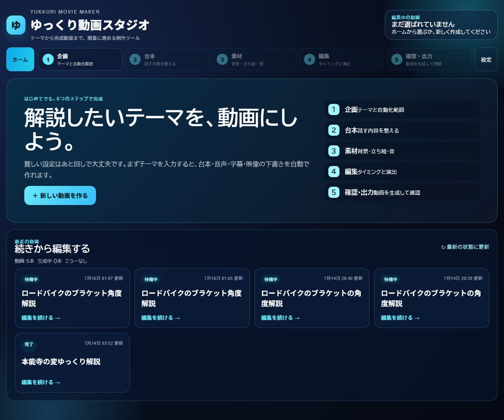
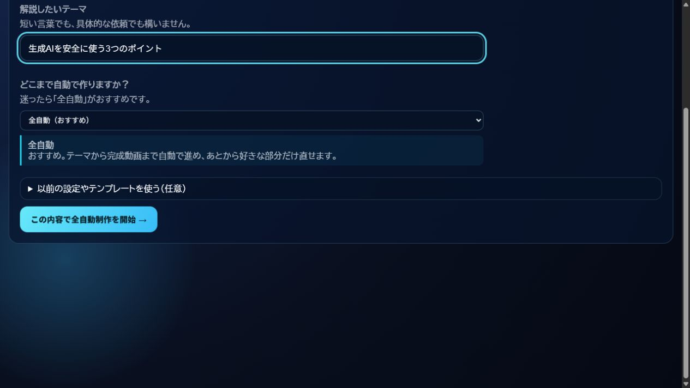
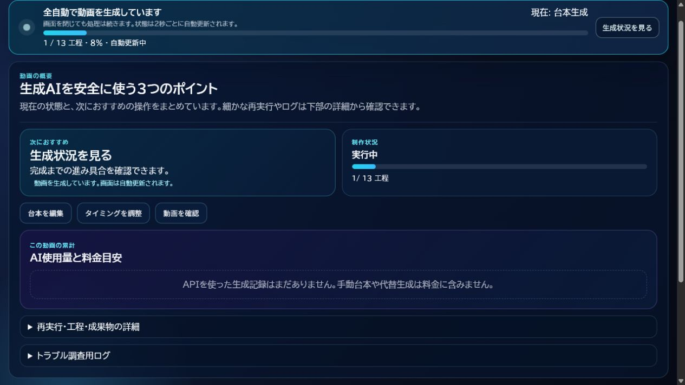
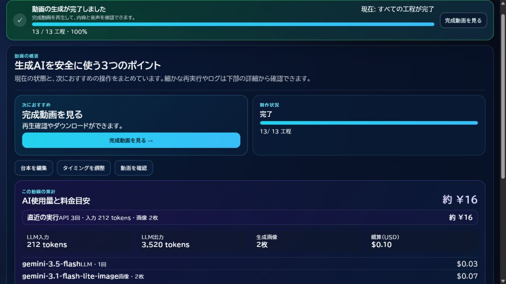
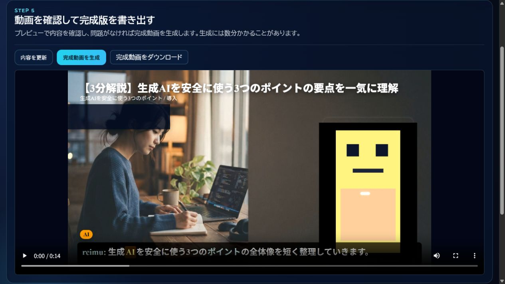

開始後に生成モニターが出ない
画面内の赤いエラー表示を確認します。「プロジェクトは作成されましたが、自動生成を開始できませんでした」と出た場合は、ホームから作成済み動画を開いて生成を再試行できます。
テーマを入力してから、生成開始・進捗確認・完成動画の確認までを順番に説明します。画面を閉じてもサーバー側の生成処理は継続します。
start_yukkuri_movie_maker.bat
をダブルクリックします。起動画面にエラーが出ず、ブラウザでホームが開くまで待ちます。

「解説したいテーマ」に動画の内容を入力し、「どこまで自動で作りますか？」で「全自動（おすすめ）」を選択します。

「この内容で全自動制作を開始 →」を1回押します。プロジェクト作成と同時に生成ジョブが登録され、概要画面へ移動します。

生成モニターの「現在」と工程数を確認します。別のタブを見たりブラウザ画面を閉じたりしても処理は続きますが、起動時の黒いウィンドウは閉じないでください。

生成モニターが完了したら「完成動画を見る」を押します。「確認・出力」画面で動画を再生し、字幕と音声、映像の見え方を確認します。
final.mp4 を保存します。

画面内の赤いエラー表示を確認します。「プロジェクトは作成されましたが、自動生成を開始できませんでした」と出た場合は、ホームから作成済み動画を開いて生成を再試行できます。
起動ウィンドウを閉じていないか確認します。設定画面の接続診断でAivisSpeech、利用するAI、Workerの状態を確認してください。
設定画面で選択モデルに対応するAPIキーを登録し、「実際に接続診断」を押します。設定済みと接続OKは別の状態です。
AivisSpeechが起動していることを確認します。起動直後は準備に時間がかかるため、数十秒待ってから失敗工程を再実行してください。